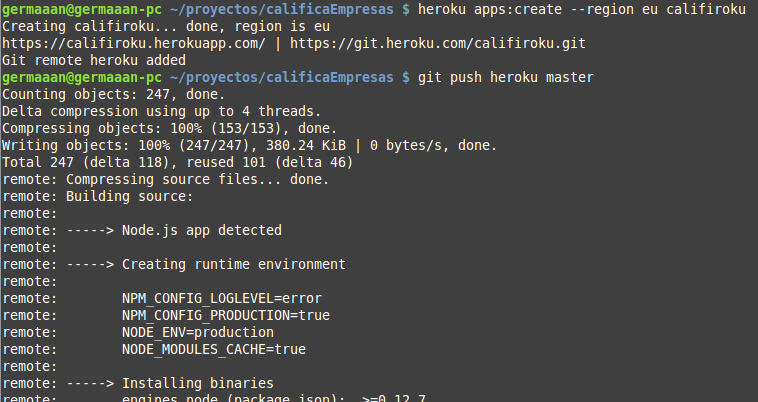
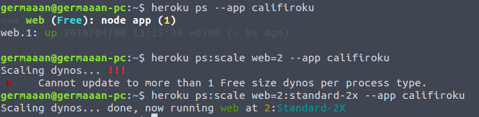

Germán Martínez Maldonado
En un PaaS solo nos tenemos que preocupar de gestionar nuestra aplicación y los datos del mismo, ya que del resto de aspectos se encarga el proveedor del servicio:
Los PaaS son compatibles con diferentes pilas, marcos de aplicación o lenguajes de programación que nos facilitan el despliegue de nuestras aplicaciones, además de darnos la posibilidad de añadir complementos que podremos usar externamente desde nuestra aplicación.
Por ejemplo, tanto Heroku como OpenShift nos permiten añadir como complemento una base de datos PostgreSQL sobre la que podríamos trabajar directamente con nuestra aplicación.
Para desplegar nuestros servicios los PaaS proveen al usuario de un número determinado de máquinas virtuales que pueden ser escaladas en función de las necesidades, siendo la propia plataforma la que se encarga de equilibrar la carga.
En PaaS como Heroku, estas máquinas virtuales reciben el nombre de dynos y son bastante configurables.
Los dynos de Heroku se configuran mediante un archivo llamado Procfile y principalmente podemos diferenciar dos tipos de dynos: web para los procesos que van a recibir tráfico HTTP y worker para los procesos que se van a ejecutar en segundo plano.
Desde un terminal mediante el cliente de línea de comandos de Heroku podemos arrancar o modificar la configuración de los dynos.
Podemos escalar horizontalmente añadiendo más dynos:
heroku ps:scale web=2Pero también podemos escalar verticalmente usando dynos más grandes:
heroku ps:scale web=2:standard-2xProcfile:
web: npm start
